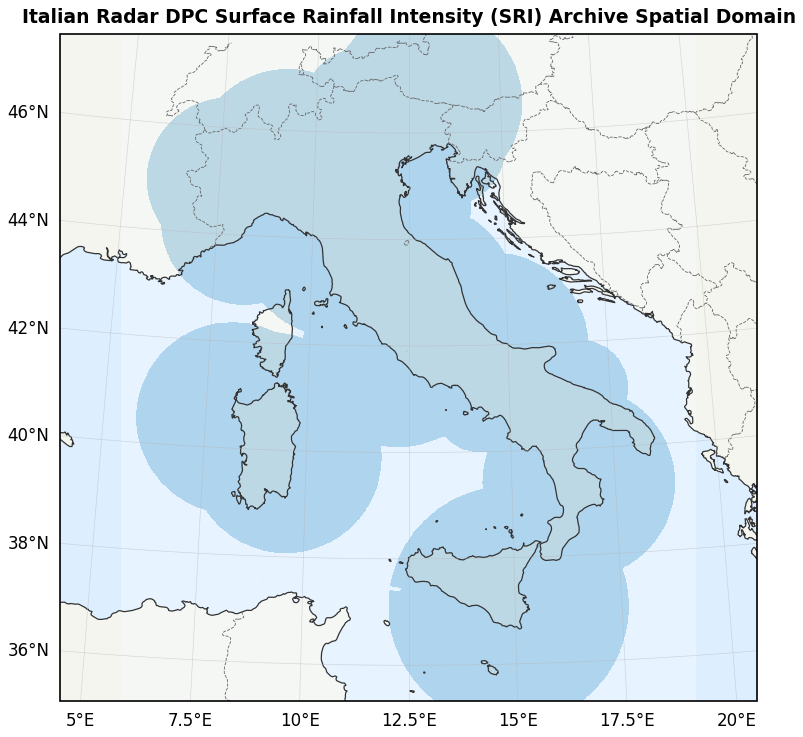
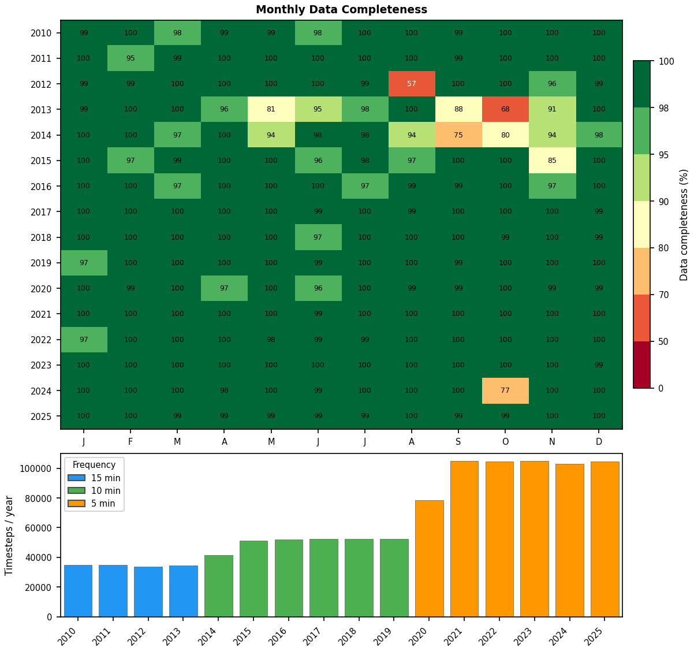
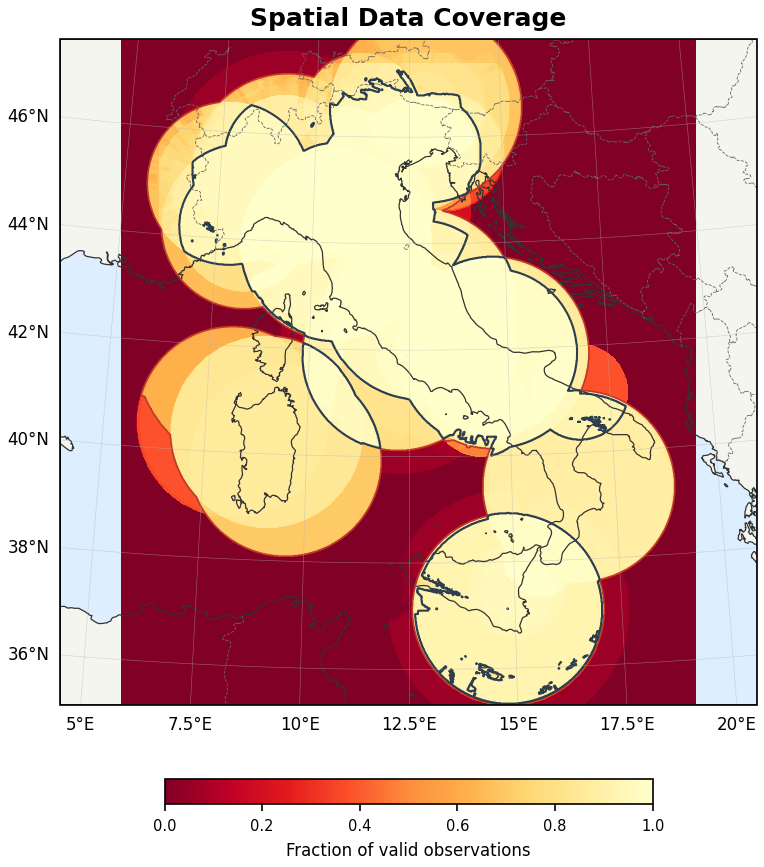
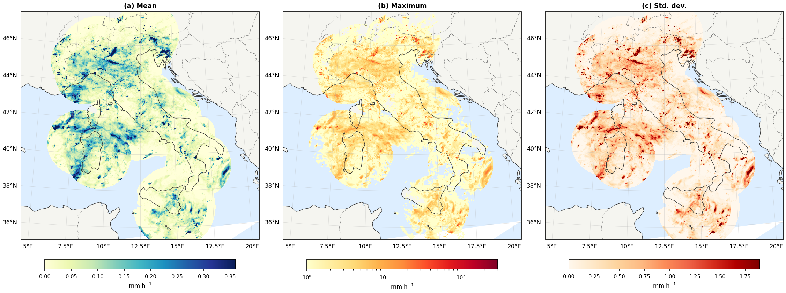
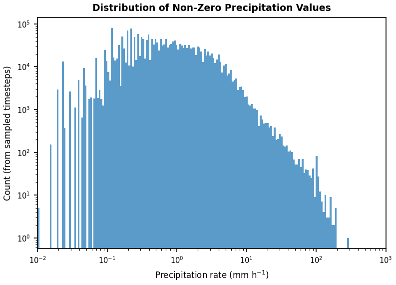
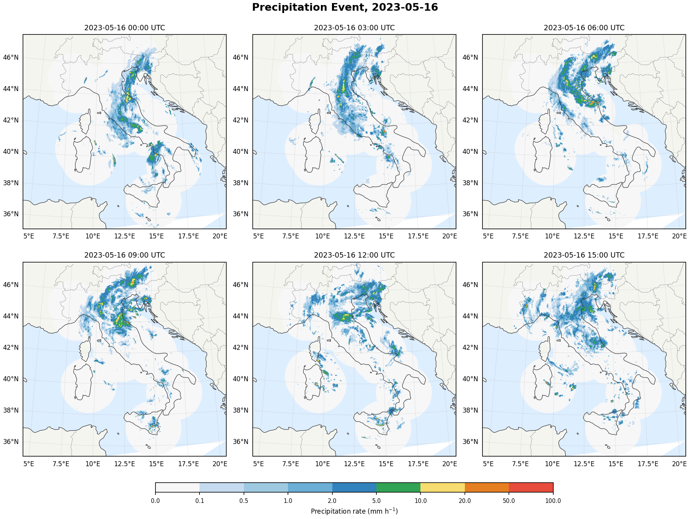
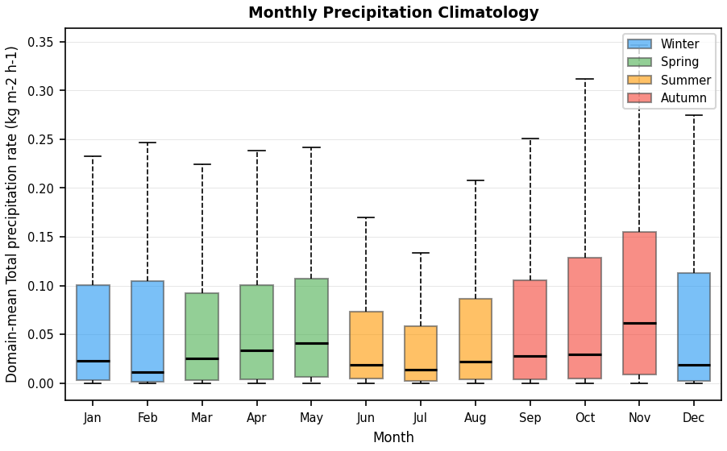

Plotting & Diagnostics#
The mlcast_datasets.plotting subpackage provides publication-quality diagnostic
figures for any dataset in the MLCast catalog. This notebook demonstrates every
plotting function using the Italian DPC SRI radar precipitation dataset as an
example.
All sample sizes are kept deliberately small so that this notebook runs quickly
in CI. Increase n_samples / n_coverage_samples for higher-quality figures.
Installation#
The plotting functions require optional dependencies (cartopy, matplotlib, dask).
Install them with the plotting extra:
pip install 'mlcast-datasets[plotting]'
import mlcast_datasets
from mlcast_datasets import plotting
Load the dataset#
cat = mlcast_datasets.open_catalog()
ds = cat.precipitation.it_dpc_sri_5min.to_dask()
ds
<xarray.Dataset> Size: 7TB
Dimensions: (time: 1039785, y: 1400, x: 1200, missing_times: 15530)
Coordinates:
* time (time) datetime64[ns] 8MB 2010-01-01 ... 2025-12-31T23:55:00
* y (y) float64 11kB 6.495e+05 6.485e+05 ... -7.495e+05
* x (x) float64 10kB -5.995e+05 -5.985e+05 ... 5.995e+05
lat (y, x) float64 13MB dask.array<chunksize=(1400, 1200), meta=np.ndarray>
lon (y, x) float64 13MB dask.array<chunksize=(1400, 1200), meta=np.ndarray>
* missing_times (missing_times) datetime64[ns] 124kB 2010-01-03T00:30:00 ....
Data variables:
RR (time, y, x) float32 7TB dask.array<chunksize=(1, 1400, 1200), meta=np.ndarray>
crs float32 4B ...
Attributes: (12/13)
Author: Gabriele Franch
Copyright: Dipartimento Protezione Civile (DPC) Nazional...
Processed by: Fondazione Bruno Kessler
base_frequencies: 15min:2010-01-01T00:00/2014-06-25T09:00;10min...
consistent_timestep_start: 2020-06-30T00:00
history: Created at 2026-02-11T18:15:05+01:00
... ...
mlcast_created_by: Gabriele Franch <franch@fbk.eu>
mlcast_created_on: 2026-02-11T18:15:05+01:00
mlcast_created_with: https://github.com/mlcast-community/mlcast-da...
mlcast_dataset_identifier: IT-DPC-SRI
mlcast_dataset_version: 0.1.0
title: Italian Radar DPC Surface Rainfall Intensity ...Domain map#
Shows the spatial footprint of the radar coverage.
plotting.plot_domain_map(ds, n_coverage_samples=10);
/home/runner/work/mlcast-datasets/mlcast-datasets/.venv/lib/python3.12/site-packages/cartopy/io/__init__.py:242: DownloadWarning: Downloading: https://naturalearth.s3.amazonaws.com/10m_physical/ne_10m_ocean.zip
warnings.warn(f'Downloading: {url}', DownloadWarning)
/home/runner/work/mlcast-datasets/mlcast-datasets/.venv/lib/python3.12/site-packages/cartopy/io/__init__.py:242: DownloadWarning: Downloading: https://naturalearth.s3.amazonaws.com/10m_physical/ne_10m_land.zip
warnings.warn(f'Downloading: {url}', DownloadWarning)

Temporal coverage#
Year-by-month completeness heatmap and yearly timestep count.
plotting.plot_temporal_coverage(ds);

Spatial coverage#
Fraction of valid (non-NaN) observations per grid cell.
plotting.plot_spatial_coverage(ds, n_samples=50);

Precipitation statistics#
Three-panel map (mean, max, std) and a log-log histogram of non-zero values.
fig_maps, fig_hist = plotting.plot_precipitation_stats(ds, n_samples=50)
[ ] | 0% Completed | 223.02 us
[ ] | 0% Completed | 506.30 ms
[ ] | 1% Completed | 1.01 s
[### ] | 8% Completed | 1.51 s
[#### ] | 10% Completed | 2.01 s
[##### ] | 14% Completed | 2.51 s
[####### ] | 19% Completed | 3.01 s
[######### ] | 23% Completed | 3.51 s
[########### ] | 28% Completed | 4.01 s
[############## ] | 36% Completed | 4.51 s
[############### ] | 38% Completed | 5.01 s
[################ ] | 41% Completed | 5.51 s
[################# ] | 44% Completed | 6.01 s
[################## ] | 47% Completed | 6.52 s
[##################### ] | 53% Completed | 7.02 s
[###################### ] | 56% Completed | 7.52 s
[####################### ] | 59% Completed | 8.02 s
[######################## ] | 62% Completed | 8.52 s
[########################### ] | 67% Completed | 9.02 s
[############################## ] | 75% Completed | 9.52 s
[############################## ] | 75% Completed | 10.02 s
[################################# ] | 84% Completed | 10.52 s
[#################################### ] | 90% Completed | 11.02 s
[##################################### ] | 93% Completed | 11.52 s
[####################################### ] | 98% Completed | 12.02 s
/home/runner/work/mlcast-datasets/mlcast-datasets/.venv/lib/python3.12/site-packages/dask/array/numpy_compat.py:61: RuntimeWarning: invalid value encountered in divide
x = np.divide(x1, x2, out)
[####################################### ] | 98% Completed | 12.53 s
[####################################### ] | 98% Completed | 13.03 s
[####################################### ] | 98% Completed | 13.53 s
[########################################] | 100% Completed | 14.03 s
/home/runner/work/mlcast-datasets/mlcast-datasets/.venv/lib/python3.12/site-packages/cartopy/io/__init__.py:242: DownloadWarning: Downloading: https://naturalearth.s3.amazonaws.com/50m_physical/ne_50m_ocean.zip
warnings.warn(f'Downloading: {url}', DownloadWarning)
/home/runner/work/mlcast-datasets/mlcast-datasets/.venv/lib/python3.12/site-packages/cartopy/io/__init__.py:242: DownloadWarning: Downloading: https://naturalearth.s3.amazonaws.com/50m_physical/ne_50m_land.zip
warnings.warn(f'Downloading: {url}', DownloadWarning)
/home/runner/work/mlcast-datasets/mlcast-datasets/.venv/lib/python3.12/site-packages/cartopy/io/__init__.py:242: DownloadWarning: Downloading: https://naturalearth.s3.amazonaws.com/50m_physical/ne_50m_coastline.zip
warnings.warn(f'Downloading: {url}', DownloadWarning)
/home/runner/work/mlcast-datasets/mlcast-datasets/.venv/lib/python3.12/site-packages/cartopy/io/__init__.py:242: DownloadWarning: Downloading: https://naturalearth.s3.amazonaws.com/50m_cultural/ne_50m_admin_0_boundary_lines_land.zip
warnings.warn(f'Downloading: {url}', DownloadWarning)


Sample precipitation event#
Multi-panel view of a specific event. Here we show the Emilia-Romagna flood of May 2023.
plotting.plot_sample_precipitation(
ds,
time_slice=slice("2023-05-16", "2023-05-17T06:00"),
);

Monthly climatology#
Box plot of domain-mean precipitation grouped by calendar month.
plotting.plot_monthly_cycle(ds, n_samples=2000);
[ ] | 0% Completed | 200.35 us
[ ] | 0% Completed | 634.38 ms
[ ] | 0% Completed | 1.14 s
[ ] | 0% Completed | 1.64 s
[ ] | 0% Completed | 2.14 s
[ ] | 0% Completed | 2.64 s
[ ] | 0% Completed | 3.14 s
[ ] | 0% Completed | 3.64 s
[ ] | 0% Completed | 4.14 s
[ ] | 0% Completed | 4.64 s
[ ] | 0% Completed | 5.14 s
[ ] | 0% Completed | 5.64 s
[ ] | 0% Completed | 6.14 s
[ ] | 1% Completed | 6.64 s
[ ] | 1% Completed | 7.14 s
[ ] | 1% Completed | 7.65 s
[ ] | 1% Completed | 8.15 s
[ ] | 1% Completed | 8.65 s
[ ] | 1% Completed | 9.15 s
[ ] | 1% Completed | 9.65 s
[ ] | 1% Completed | 10.15 s
[ ] | 2% Completed | 10.65 s
[ ] | 2% Completed | 11.15 s
[ ] | 2% Completed | 11.65 s
[ ] | 2% Completed | 12.15 s
[ ] | 2% Completed | 12.65 s
[# ] | 2% Completed | 13.15 s
[# ] | 2% Completed | 13.65 s
[# ] | 2% Completed | 14.15 s
[# ] | 2% Completed | 14.66 s
[# ] | 2% Completed | 15.16 s
[# ] | 3% Completed | 15.66 s
[# ] | 3% Completed | 16.16 s
[# ] | 3% Completed | 16.66 s
[# ] | 3% Completed | 17.16 s
[# ] | 3% Completed | 17.66 s
[# ] | 3% Completed | 18.16 s
[# ] | 3% Completed | 18.66 s
[# ] | 3% Completed | 19.16 s
[# ] | 4% Completed | 19.66 s
[# ] | 4% Completed | 20.17 s
[# ] | 4% Completed | 20.67 s
[# ] | 4% Completed | 21.17 s
[# ] | 4% Completed | 21.67 s
[# ] | 4% Completed | 22.17 s
[# ] | 4% Completed | 22.67 s
[# ] | 4% Completed | 23.17 s
[# ] | 4% Completed | 23.67 s
[# ] | 4% Completed | 24.17 s
[## ] | 5% Completed | 24.67 s
[## ] | 5% Completed | 25.17 s
[## ] | 5% Completed | 25.67 s
[## ] | 5% Completed | 26.17 s
[## ] | 5% Completed | 26.68 s
[## ] | 5% Completed | 27.18 s
[## ] | 5% Completed | 27.68 s
[## ] | 5% Completed | 28.18 s
[## ] | 5% Completed | 28.68 s
[## ] | 6% Completed | 29.18 s
[## ] | 6% Completed | 29.68 s
[## ] | 6% Completed | 30.18 s
[## ] | 6% Completed | 30.68 s
[## ] | 6% Completed | 31.18 s
[## ] | 6% Completed | 31.68 s
[## ] | 6% Completed | 32.18 s
[## ] | 6% Completed | 32.68 s
[## ] | 7% Completed | 33.18 s
[## ] | 7% Completed | 33.68 s
[## ] | 7% Completed | 34.19 s
[## ] | 7% Completed | 34.69 s
[## ] | 7% Completed | 35.19 s
[### ] | 7% Completed | 35.69 s
[### ] | 7% Completed | 36.19 s
[### ] | 7% Completed | 36.69 s
[### ] | 7% Completed | 37.19 s
[### ] | 8% Completed | 37.69 s
[### ] | 8% Completed | 38.19 s
[### ] | 8% Completed | 38.69 s
[### ] | 8% Completed | 39.19 s
[### ] | 8% Completed | 39.69 s
[### ] | 8% Completed | 40.19 s
[### ] | 8% Completed | 40.70 s
[### ] | 8% Completed | 41.20 s
[### ] | 9% Completed | 41.70 s
[### ] | 9% Completed | 42.20 s
[### ] | 9% Completed | 42.70 s
[### ] | 9% Completed | 43.20 s
[### ] | 9% Completed | 43.70 s
[### ] | 9% Completed | 44.20 s
[### ] | 9% Completed | 44.70 s
[### ] | 9% Completed | 45.20 s
[### ] | 9% Completed | 45.70 s
[### ] | 9% Completed | 46.20 s
[#### ] | 10% Completed | 46.71 s
[#### ] | 10% Completed | 47.21 s
[#### ] | 10% Completed | 47.71 s
[#### ] | 10% Completed | 48.21 s
[#### ] | 10% Completed | 48.71 s
[#### ] | 10% Completed | 49.21 s
[#### ] | 10% Completed | 49.71 s
[#### ] | 10% Completed | 50.21 s
[#### ] | 10% Completed | 50.71 s
[#### ] | 11% Completed | 51.21 s
[#### ] | 11% Completed | 51.71 s
[#### ] | 11% Completed | 52.21 s
[#### ] | 11% Completed | 52.71 s
[#### ] | 11% Completed | 53.21 s
[#### ] | 11% Completed | 53.71 s
[#### ] | 11% Completed | 54.22 s
[#### ] | 11% Completed | 54.72 s
[#### ] | 12% Completed | 55.22 s
[#### ] | 12% Completed | 55.72 s
[#### ] | 12% Completed | 56.22 s
[#### ] | 12% Completed | 56.72 s
[#### ] | 12% Completed | 57.22 s
[#### ] | 12% Completed | 57.72 s
[##### ] | 12% Completed | 58.22 s
[##### ] | 12% Completed | 58.72 s
[##### ] | 12% Completed | 59.22 s
[##### ] | 13% Completed | 59.72 s
[##### ] | 13% Completed | 60.22 s
[##### ] | 13% Completed | 60.73 s
[##### ] | 13% Completed | 61.23 s
[##### ] | 13% Completed | 61.73 s
[##### ] | 13% Completed | 62.23 s
[##### ] | 13% Completed | 62.73 s
[##### ] | 13% Completed | 63.23 s
[##### ] | 13% Completed | 63.73 s
[##### ] | 14% Completed | 64.23 s
[##### ] | 14% Completed | 64.73 s
[##### ] | 14% Completed | 65.23 s
[##### ] | 14% Completed | 65.73 s
[##### ] | 14% Completed | 66.23 s
[##### ] | 14% Completed | 66.74 s
[##### ] | 14% Completed | 67.24 s
[##### ] | 14% Completed | 67.74 s
[##### ] | 14% Completed | 68.24 s
[###### ] | 15% Completed | 68.74 s
[###### ] | 15% Completed | 69.24 s
[###### ] | 15% Completed | 69.74 s
[###### ] | 15% Completed | 70.24 s
[###### ] | 15% Completed | 70.74 s
[###### ] | 15% Completed | 71.24 s
[###### ] | 15% Completed | 71.74 s
[###### ] | 15% Completed | 72.24 s
[###### ] | 15% Completed | 72.74 s
[###### ] | 16% Completed | 73.24 s
[###### ] | 16% Completed | 73.75 s
[###### ] | 16% Completed | 74.25 s
[###### ] | 16% Completed | 74.75 s
[###### ] | 16% Completed | 75.25 s
[###### ] | 16% Completed | 75.75 s
[###### ] | 16% Completed | 76.25 s
[###### ] | 17% Completed | 76.75 s
[###### ] | 17% Completed | 77.25 s
[###### ] | 17% Completed | 77.75 s
[###### ] | 17% Completed | 78.25 s
[###### ] | 17% Completed | 78.75 s
[####### ] | 17% Completed | 79.25 s
[####### ] | 17% Completed | 79.75 s
[####### ] | 17% Completed | 80.26 s
[####### ] | 17% Completed | 80.76 s
[####### ] | 18% Completed | 81.26 s
[####### ] | 18% Completed | 81.76 s
[####### ] | 18% Completed | 82.26 s
[####### ] | 18% Completed | 82.76 s
[####### ] | 18% Completed | 83.26 s
[####### ] | 18% Completed | 83.76 s
[####### ] | 18% Completed | 84.26 s
[####### ] | 18% Completed | 84.76 s
[####### ] | 18% Completed | 85.26 s
[####### ] | 18% Completed | 85.76 s
[####### ] | 19% Completed | 86.26 s
[####### ] | 19% Completed | 86.76 s
[####### ] | 19% Completed | 87.27 s
[####### ] | 19% Completed | 87.77 s
[####### ] | 19% Completed | 88.27 s
[####### ] | 19% Completed | 88.77 s
[####### ] | 19% Completed | 89.27 s
[####### ] | 19% Completed | 89.77 s
[####### ] | 19% Completed | 90.27 s
[######## ] | 20% Completed | 90.77 s
[######## ] | 20% Completed | 91.27 s
[######## ] | 20% Completed | 91.77 s
[######## ] | 20% Completed | 92.27 s
[######## ] | 20% Completed | 92.77 s
[######## ] | 20% Completed | 93.27 s
[######## ] | 20% Completed | 93.77 s
[######## ] | 20% Completed | 94.28 s
[######## ] | 21% Completed | 94.78 s
[######## ] | 21% Completed | 95.28 s
[######## ] | 21% Completed | 95.78 s
[######## ] | 21% Completed | 96.28 s
[######## ] | 21% Completed | 96.78 s
[######## ] | 21% Completed | 97.28 s
[######## ] | 21% Completed | 97.78 s
[######## ] | 22% Completed | 98.28 s
[######## ] | 22% Completed | 98.78 s
[######## ] | 22% Completed | 99.28 s
[######## ] | 22% Completed | 99.78 s
[######### ] | 22% Completed | 100.28 s
[######### ] | 22% Completed | 100.79 s
[######### ] | 22% Completed | 101.29 s
[######### ] | 22% Completed | 101.79 s
[######### ] | 23% Completed | 102.29 s
[######### ] | 23% Completed | 102.79 s
[######### ] | 23% Completed | 103.29 s
[######### ] | 23% Completed | 103.79 s
[######### ] | 23% Completed | 104.29 s
[######### ] | 23% Completed | 104.79 s
[######### ] | 23% Completed | 105.29 s
[######### ] | 23% Completed | 105.79 s
[######### ] | 23% Completed | 106.29 s
[######### ] | 24% Completed | 106.79 s
[######### ] | 24% Completed | 107.29 s
[######### ] | 24% Completed | 107.80 s
[######### ] | 24% Completed | 108.30 s
[######### ] | 24% Completed | 108.80 s
[######### ] | 24% Completed | 109.30 s
[######### ] | 24% Completed | 109.80 s
[######### ] | 24% Completed | 110.30 s
[########## ] | 25% Completed | 110.80 s
[########## ] | 25% Completed | 111.30 s
[########## ] | 25% Completed | 111.80 s
[########## ] | 25% Completed | 112.30 s
[########## ] | 25% Completed | 112.80 s
[########## ] | 25% Completed | 113.31 s
[########## ] | 25% Completed | 113.81 s
[########## ] | 25% Completed | 114.31 s
[########## ] | 25% Completed | 114.81 s
[########## ] | 26% Completed | 115.31 s
[########## ] | 26% Completed | 115.81 s
[########## ] | 26% Completed | 116.31 s
[########## ] | 26% Completed | 116.81 s
[########## ] | 26% Completed | 117.31 s
[########## ] | 26% Completed | 117.81 s
[########## ] | 26% Completed | 118.31 s
[########## ] | 26% Completed | 118.81 s
[########## ] | 27% Completed | 119.31 s
[########## ] | 27% Completed | 119.81 s
[########## ] | 27% Completed | 120.32 s
[########## ] | 27% Completed | 120.82 s
[########### ] | 27% Completed | 121.32 s
[########### ] | 27% Completed | 121.82 s
[########### ] | 27% Completed | 122.32 s
[########### ] | 27% Completed | 122.82 s
[########### ] | 28% Completed | 123.32 s
[########### ] | 28% Completed | 123.82 s
[########### ] | 28% Completed | 124.32 s
[########### ] | 28% Completed | 124.82 s
[########### ] | 28% Completed | 125.32 s
[########### ] | 28% Completed | 125.83 s
[########### ] | 28% Completed | 126.33 s
[########### ] | 28% Completed | 126.83 s
[########### ] | 28% Completed | 127.33 s
[########### ] | 29% Completed | 127.83 s
[########### ] | 29% Completed | 128.33 s
[########### ] | 29% Completed | 128.83 s
[########### ] | 29% Completed | 129.33 s
[########### ] | 29% Completed | 129.83 s
[########### ] | 29% Completed | 130.33 s
[########### ] | 29% Completed | 130.83 s
[########### ] | 29% Completed | 131.33 s
[########### ] | 29% Completed | 131.83 s
[########### ] | 29% Completed | 132.34 s
[############ ] | 30% Completed | 132.84 s
[############ ] | 30% Completed | 133.34 s
[############ ] | 30% Completed | 133.84 s
[############ ] | 30% Completed | 134.34 s
[############ ] | 30% Completed | 134.84 s
[############ ] | 30% Completed | 135.34 s
[############ ] | 30% Completed | 135.84 s
[############ ] | 31% Completed | 136.34 s
[############ ] | 31% Completed | 136.84 s
[############ ] | 31% Completed | 137.34 s
[############ ] | 31% Completed | 137.84 s
[############ ] | 31% Completed | 138.34 s
[############ ] | 31% Completed | 138.85 s
[############ ] | 31% Completed | 139.35 s
[############ ] | 31% Completed | 139.85 s
[############ ] | 32% Completed | 140.35 s
[############ ] | 32% Completed | 140.85 s
[############ ] | 32% Completed | 141.35 s
[############ ] | 32% Completed | 141.85 s
[############ ] | 32% Completed | 142.35 s
[############# ] | 32% Completed | 142.85 s
[############# ] | 32% Completed | 143.35 s
[############# ] | 32% Completed | 143.85 s
[############# ] | 32% Completed | 144.35 s
[############# ] | 32% Completed | 144.85 s
[############# ] | 33% Completed | 145.35 s
[############# ] | 33% Completed | 145.86 s
[############# ] | 33% Completed | 146.36 s
[############# ] | 33% Completed | 146.86 s
[############# ] | 33% Completed | 147.36 s
[############# ] | 33% Completed | 147.86 s
[############# ] | 33% Completed | 148.36 s
[############# ] | 33% Completed | 148.86 s
[############# ] | 34% Completed | 149.36 s
[############# ] | 34% Completed | 149.86 s
[############# ] | 34% Completed | 150.36 s
[############# ] | 34% Completed | 150.86 s
[############# ] | 34% Completed | 151.36 s
[############# ] | 34% Completed | 151.86 s
[############# ] | 34% Completed | 152.36 s
[############# ] | 34% Completed | 152.86 s
[############# ] | 34% Completed | 153.37 s
[############## ] | 35% Completed | 153.87 s
[############## ] | 35% Completed | 154.37 s
[############## ] | 35% Completed | 154.87 s
[############## ] | 35% Completed | 155.37 s
[############## ] | 35% Completed | 155.87 s
[############## ] | 35% Completed | 156.37 s
[############## ] | 35% Completed | 156.87 s
[############## ] | 35% Completed | 157.37 s
[############## ] | 35% Completed | 157.87 s
[############## ] | 35% Completed | 158.37 s
[############## ] | 36% Completed | 158.87 s
[############## ] | 36% Completed | 159.37 s
[############## ] | 36% Completed | 159.87 s
[############## ] | 36% Completed | 160.38 s
[############## ] | 36% Completed | 160.88 s
[############## ] | 36% Completed | 161.38 s
[############## ] | 36% Completed | 161.88 s
[############## ] | 36% Completed | 162.38 s
[############## ] | 36% Completed | 162.88 s
[############## ] | 37% Completed | 163.38 s
[############## ] | 37% Completed | 163.88 s
[############## ] | 37% Completed | 164.38 s
[############## ] | 37% Completed | 164.88 s
[############### ] | 37% Completed | 165.38 s
[############### ] | 37% Completed | 165.88 s
[############### ] | 37% Completed | 166.38 s
[############### ] | 37% Completed | 166.88 s
[############### ] | 37% Completed | 167.39 s
[############### ] | 38% Completed | 167.89 s
[############### ] | 38% Completed | 168.39 s
[############### ] | 38% Completed | 168.89 s
[############### ] | 38% Completed | 169.39 s
[############### ] | 38% Completed | 169.89 s
[############### ] | 38% Completed | 170.39 s
[############### ] | 38% Completed | 170.89 s
[############### ] | 38% Completed | 171.39 s
[############### ] | 38% Completed | 171.89 s
[############### ] | 39% Completed | 172.39 s
[############### ] | 39% Completed | 172.89 s
[############### ] | 39% Completed | 173.39 s
[############### ] | 39% Completed | 173.89 s
[############### ] | 39% Completed | 174.39 s
[############### ] | 39% Completed | 174.90 s
[############### ] | 39% Completed | 175.40 s
[############### ] | 39% Completed | 175.90 s
[############### ] | 39% Completed | 176.40 s
[################ ] | 40% Completed | 176.90 s
[################ ] | 40% Completed | 177.40 s
[################ ] | 40% Completed | 177.90 s
[################ ] | 40% Completed | 178.40 s
[################ ] | 40% Completed | 178.90 s
[################ ] | 40% Completed | 179.40 s
[################ ] | 40% Completed | 179.90 s
[################ ] | 40% Completed | 180.40 s
[################ ] | 41% Completed | 180.90 s
[################ ] | 41% Completed | 181.41 s
[################ ] | 41% Completed | 181.91 s
[################ ] | 41% Completed | 182.41 s
[################ ] | 41% Completed | 182.91 s
[################ ] | 41% Completed | 183.41 s
[################ ] | 41% Completed | 183.91 s
[################ ] | 41% Completed | 184.41 s
[################ ] | 41% Completed | 184.91 s
[################ ] | 41% Completed | 185.41 s
[################ ] | 42% Completed | 185.91 s
[################ ] | 42% Completed | 186.41 s
[################ ] | 42% Completed | 186.91 s
[################ ] | 42% Completed | 187.41 s
[################# ] | 42% Completed | 187.92 s
[################# ] | 42% Completed | 188.42 s
[################# ] | 42% Completed | 188.92 s
[################# ] | 42% Completed | 189.42 s
[################# ] | 42% Completed | 189.92 s
[################# ] | 43% Completed | 190.42 s
[################# ] | 43% Completed | 190.92 s
[################# ] | 43% Completed | 191.42 s
[################# ] | 43% Completed | 191.92 s
[################# ] | 43% Completed | 192.42 s
[################# ] | 43% Completed | 192.92 s
[################# ] | 43% Completed | 193.42 s
[################# ] | 43% Completed | 193.93 s
[################# ] | 43% Completed | 194.43 s
[################# ] | 44% Completed | 194.93 s
[################# ] | 44% Completed | 195.43 s
[################# ] | 44% Completed | 195.93 s
[################# ] | 44% Completed | 196.43 s
[################# ] | 44% Completed | 196.93 s
[################# ] | 44% Completed | 197.43 s
[################# ] | 44% Completed | 197.93 s
[################# ] | 44% Completed | 198.43 s
[################## ] | 45% Completed | 198.93 s
[################## ] | 45% Completed | 199.43 s
[################## ] | 45% Completed | 199.93 s
[################## ] | 45% Completed | 200.44 s
[################## ] | 45% Completed | 200.94 s
[################## ] | 45% Completed | 201.44 s
[################## ] | 45% Completed | 201.94 s
[################## ] | 45% Completed | 202.44 s
[################## ] | 45% Completed | 202.94 s
[################## ] | 45% Completed | 203.44 s
[################## ] | 46% Completed | 203.94 s
[################## ] | 46% Completed | 204.44 s
[################## ] | 46% Completed | 204.94 s
[################## ] | 46% Completed | 205.44 s
[################## ] | 46% Completed | 205.94 s
[################## ] | 46% Completed | 206.44 s
[################## ] | 46% Completed | 206.95 s
[################## ] | 46% Completed | 207.45 s
[################## ] | 46% Completed | 207.95 s
[################## ] | 47% Completed | 208.45 s
[################## ] | 47% Completed | 208.95 s
[################## ] | 47% Completed | 209.45 s
[################### ] | 47% Completed | 209.95 s
[################### ] | 47% Completed | 210.45 s
[################### ] | 47% Completed | 210.95 s
[################### ] | 47% Completed | 211.45 s
[################### ] | 48% Completed | 211.95 s
[################### ] | 48% Completed | 212.45 s
[################### ] | 48% Completed | 212.95 s
[################### ] | 48% Completed | 213.45 s
[################### ] | 48% Completed | 213.96 s
[################### ] | 48% Completed | 214.46 s
[################### ] | 48% Completed | 214.96 s
[################### ] | 48% Completed | 215.46 s
[################### ] | 48% Completed | 215.96 s
[################### ] | 49% Completed | 216.46 s
[################### ] | 49% Completed | 216.96 s
[################### ] | 49% Completed | 217.46 s
[################### ] | 49% Completed | 217.96 s
[################### ] | 49% Completed | 218.46 s
[################### ] | 49% Completed | 218.96 s
[################### ] | 49% Completed | 219.46 s
[################### ] | 49% Completed | 219.96 s
[################### ] | 49% Completed | 220.47 s
[################### ] | 49% Completed | 220.97 s
[#################### ] | 50% Completed | 221.47 s
[#################### ] | 50% Completed | 221.97 s
[#################### ] | 50% Completed | 222.47 s
[#################### ] | 50% Completed | 222.97 s
[#################### ] | 50% Completed | 223.47 s
[#################### ] | 50% Completed | 223.97 s
[#################### ] | 50% Completed | 224.47 s
[#################### ] | 50% Completed | 224.97 s
[#################### ] | 51% Completed | 225.47 s
[#################### ] | 51% Completed | 225.97 s
[#################### ] | 51% Completed | 226.47 s
[#################### ] | 51% Completed | 226.97 s
[#################### ] | 51% Completed | 227.48 s
[#################### ] | 51% Completed | 227.98 s
[#################### ] | 51% Completed | 228.48 s
[#################### ] | 51% Completed | 228.98 s
[#################### ] | 51% Completed | 229.48 s
[#################### ] | 52% Completed | 229.98 s
[#################### ] | 52% Completed | 230.48 s
[#################### ] | 52% Completed | 230.98 s
[#################### ] | 52% Completed | 231.48 s
[##################### ] | 52% Completed | 231.98 s
[##################### ] | 52% Completed | 232.48 s
[##################### ] | 52% Completed | 232.98 s
[##################### ] | 52% Completed | 233.49 s
[##################### ] | 52% Completed | 233.99 s
[##################### ] | 53% Completed | 234.49 s
[##################### ] | 53% Completed | 234.99 s
[##################### ] | 53% Completed | 235.49 s
[##################### ] | 53% Completed | 235.99 s
[##################### ] | 53% Completed | 236.49 s
[##################### ] | 53% Completed | 236.99 s
[##################### ] | 53% Completed | 237.49 s
[##################### ] | 53% Completed | 237.99 s
[##################### ] | 53% Completed | 238.49 s
[##################### ] | 54% Completed | 238.99 s
[##################### ] | 54% Completed | 239.49 s
[##################### ] | 54% Completed | 239.99 s
[##################### ] | 54% Completed | 240.50 s
[##################### ] | 54% Completed | 241.00 s
[##################### ] | 54% Completed | 241.50 s
[##################### ] | 54% Completed | 242.00 s
[##################### ] | 54% Completed | 242.50 s
[##################### ] | 54% Completed | 243.00 s
[##################### ] | 54% Completed | 243.50 s
[###################### ] | 55% Completed | 244.00 s
[###################### ] | 55% Completed | 244.50 s
[###################### ] | 55% Completed | 245.00 s
[###################### ] | 55% Completed | 245.50 s
[###################### ] | 55% Completed | 246.00 s
[###################### ] | 55% Completed | 246.50 s
[###################### ] | 55% Completed | 247.00 s
[###################### ] | 56% Completed | 247.50 s
[###################### ] | 56% Completed | 248.00 s
[###################### ] | 56% Completed | 248.51 s
[###################### ] | 56% Completed | 249.01 s
[###################### ] | 56% Completed | 249.51 s
[###################### ] | 56% Completed | 250.01 s
[###################### ] | 56% Completed | 250.51 s
[###################### ] | 56% Completed | 251.01 s
[###################### ] | 56% Completed | 251.51 s
[###################### ] | 56% Completed | 252.01 s
[###################### ] | 57% Completed | 252.51 s
[###################### ] | 57% Completed | 253.01 s
[###################### ] | 57% Completed | 253.51 s
[###################### ] | 57% Completed | 254.01 s
[####################### ] | 57% Completed | 254.51 s
[####################### ] | 57% Completed | 255.01 s
[####################### ] | 57% Completed | 255.52 s
[####################### ] | 57% Completed | 256.02 s
[####################### ] | 57% Completed | 256.52 s
[####################### ] | 58% Completed | 257.02 s
[####################### ] | 58% Completed | 257.52 s
[####################### ] | 58% Completed | 258.02 s
[####################### ] | 58% Completed | 258.52 s
[####################### ] | 58% Completed | 259.02 s
[####################### ] | 58% Completed | 259.52 s
[####################### ] | 58% Completed | 260.02 s
[####################### ] | 58% Completed | 260.52 s
[####################### ] | 58% Completed | 261.02 s
[####################### ] | 58% Completed | 261.52 s
[####################### ] | 58% Completed | 262.03 s
[####################### ] | 59% Completed | 262.53 s
[####################### ] | 59% Completed | 263.03 s
[####################### ] | 59% Completed | 263.53 s
[####################### ] | 59% Completed | 264.03 s
[####################### ] | 59% Completed | 264.53 s
[####################### ] | 59% Completed | 265.03 s
[####################### ] | 59% Completed | 265.53 s
[######################## ] | 60% Completed | 266.03 s
[######################## ] | 60% Completed | 266.53 s
[######################## ] | 60% Completed | 267.03 s
[######################## ] | 60% Completed | 267.54 s
[######################## ] | 60% Completed | 268.04 s
[######################## ] | 60% Completed | 268.54 s
[######################## ] | 60% Completed | 269.04 s
[######################## ] | 60% Completed | 269.54 s
[######################## ] | 61% Completed | 270.04 s
[######################## ] | 61% Completed | 270.54 s
[######################## ] | 61% Completed | 271.04 s
[######################## ] | 61% Completed | 271.54 s
[######################## ] | 61% Completed | 272.04 s
[######################## ] | 61% Completed | 272.54 s
[######################## ] | 61% Completed | 273.04 s
[######################## ] | 61% Completed | 273.54 s
[######################## ] | 61% Completed | 274.05 s
[######################## ] | 62% Completed | 274.55 s
[######################## ] | 62% Completed | 275.05 s
[######################## ] | 62% Completed | 275.55 s
[######################## ] | 62% Completed | 276.05 s
[######################### ] | 62% Completed | 276.55 s
[######################### ] | 62% Completed | 277.05 s
[######################### ] | 62% Completed | 277.55 s
[######################### ] | 62% Completed | 278.05 s
[######################### ] | 62% Completed | 278.55 s
[######################### ] | 63% Completed | 279.05 s
[######################### ] | 63% Completed | 279.55 s
[######################### ] | 63% Completed | 280.05 s
[######################### ] | 63% Completed | 280.55 s
[######################### ] | 63% Completed | 281.05 s
[######################### ] | 63% Completed | 281.56 s
[######################### ] | 63% Completed | 282.06 s
[######################### ] | 63% Completed | 282.56 s
[######################### ] | 64% Completed | 283.06 s
[######################### ] | 64% Completed | 283.56 s
[######################### ] | 64% Completed | 284.06 s
[######################### ] | 64% Completed | 284.56 s
[######################### ] | 64% Completed | 285.06 s
[######################### ] | 64% Completed | 285.56 s
[######################### ] | 64% Completed | 286.06 s
[######################### ] | 64% Completed | 286.56 s
[######################### ] | 64% Completed | 287.06 s
[######################### ] | 64% Completed | 287.56 s
[######################### ] | 64% Completed | 288.06 s
[########################## ] | 65% Completed | 288.56 s
[########################## ] | 65% Completed | 289.07 s
[########################## ] | 65% Completed | 289.57 s
[########################## ] | 65% Completed | 290.07 s
[########################## ] | 65% Completed | 290.57 s
[########################## ] | 65% Completed | 291.07 s
[########################## ] | 65% Completed | 291.57 s
[########################## ] | 65% Completed | 292.07 s
[########################## ] | 66% Completed | 292.57 s
[########################## ] | 66% Completed | 293.07 s
[########################## ] | 66% Completed | 293.57 s
[########################## ] | 66% Completed | 294.07 s
[########################## ] | 66% Completed | 294.58 s
[########################## ] | 66% Completed | 295.08 s
[########################## ] | 66% Completed | 295.58 s
[########################## ] | 66% Completed | 296.08 s
[########################## ] | 67% Completed | 296.58 s
[########################## ] | 67% Completed | 297.08 s
[########################## ] | 67% Completed | 297.58 s
[########################## ] | 67% Completed | 298.08 s
[########################### ] | 67% Completed | 298.58 s
[########################### ] | 67% Completed | 299.08 s
[########################### ] | 67% Completed | 299.58 s
[########################### ] | 67% Completed | 300.08 s
[########################### ] | 67% Completed | 300.58 s
[########################### ] | 68% Completed | 301.08 s
[########################### ] | 68% Completed | 301.59 s
[########################### ] | 68% Completed | 302.09 s
[########################### ] | 68% Completed | 302.59 s
[########################### ] | 68% Completed | 303.09 s
[########################### ] | 68% Completed | 303.59 s
[########################### ] | 68% Completed | 304.09 s
[########################### ] | 68% Completed | 304.59 s
[########################### ] | 69% Completed | 305.09 s
[########################### ] | 69% Completed | 305.59 s
[########################### ] | 69% Completed | 306.09 s
[########################### ] | 69% Completed | 306.59 s
[########################### ] | 69% Completed | 307.09 s
[########################### ] | 69% Completed | 307.59 s
[########################### ] | 69% Completed | 308.10 s
[########################### ] | 69% Completed | 308.60 s
[############################ ] | 70% Completed | 309.10 s
[############################ ] | 70% Completed | 309.60 s
[############################ ] | 70% Completed | 310.10 s
[############################ ] | 70% Completed | 310.60 s
[############################ ] | 70% Completed | 311.10 s
[############################ ] | 70% Completed | 311.60 s
[############################ ] | 70% Completed | 312.10 s
[############################ ] | 71% Completed | 312.60 s
[############################ ] | 71% Completed | 313.10 s
[############################ ] | 71% Completed | 313.60 s
[############################ ] | 71% Completed | 314.11 s
[############################ ] | 71% Completed | 314.61 s
[############################ ] | 71% Completed | 315.11 s
[############################ ] | 72% Completed | 315.61 s
[############################ ] | 72% Completed | 316.11 s
[############################ ] | 72% Completed | 316.61 s
[############################ ] | 72% Completed | 317.11 s
[############################# ] | 72% Completed | 317.61 s
[############################# ] | 72% Completed | 318.11 s
[############################# ] | 72% Completed | 318.61 s
[############################# ] | 72% Completed | 319.11 s
[############################# ] | 72% Completed | 319.61 s
[############################# ] | 73% Completed | 320.11 s
[############################# ] | 73% Completed | 320.62 s
[############################# ] | 73% Completed | 321.12 s
[############################# ] | 73% Completed | 321.62 s
[############################# ] | 73% Completed | 322.12 s
[############################# ] | 73% Completed | 322.62 s
[############################# ] | 73% Completed | 323.12 s
[############################# ] | 73% Completed | 323.62 s
[############################# ] | 73% Completed | 324.12 s
[############################# ] | 73% Completed | 324.62 s
[############################# ] | 74% Completed | 325.12 s
[############################# ] | 74% Completed | 325.62 s
[############################# ] | 74% Completed | 326.12 s
[############################# ] | 74% Completed | 326.62 s
[############################# ] | 74% Completed | 327.12 s
[############################# ] | 74% Completed | 327.62 s
[############################# ] | 74% Completed | 328.13 s
[############################# ] | 74% Completed | 328.63 s
[############################## ] | 75% Completed | 329.13 s
[############################## ] | 75% Completed | 329.63 s
[############################## ] | 75% Completed | 330.13 s
[############################## ] | 75% Completed | 330.63 s
[############################## ] | 75% Completed | 331.13 s
[############################## ] | 75% Completed | 331.63 s
[############################## ] | 75% Completed | 332.13 s
[############################## ] | 75% Completed | 332.63 s
[############################## ] | 76% Completed | 333.13 s
[############################## ] | 76% Completed | 333.63 s
[############################## ] | 76% Completed | 334.14 s
[############################## ] | 76% Completed | 334.64 s
[############################## ] | 76% Completed | 335.14 s
[############################## ] | 76% Completed | 335.64 s
[############################## ] | 76% Completed | 336.14 s
[############################## ] | 77% Completed | 336.64 s
[############################## ] | 77% Completed | 337.14 s
[############################## ] | 77% Completed | 337.64 s
[############################## ] | 77% Completed | 338.14 s
[############################## ] | 77% Completed | 338.64 s
[############################### ] | 77% Completed | 339.14 s
[############################### ] | 77% Completed | 339.64 s
[############################### ] | 77% Completed | 340.14 s
[############################### ] | 77% Completed | 340.65 s
[############################### ] | 78% Completed | 341.15 s
[############################### ] | 78% Completed | 341.65 s
[############################### ] | 78% Completed | 342.15 s
[############################### ] | 78% Completed | 342.65 s
[############################### ] | 78% Completed | 343.15 s
[############################### ] | 78% Completed | 343.65 s
[############################### ] | 78% Completed | 344.15 s
[############################### ] | 78% Completed | 344.65 s
[############################### ] | 78% Completed | 345.15 s
[############################### ] | 78% Completed | 345.65 s
[############################### ] | 79% Completed | 346.15 s
[############################### ] | 79% Completed | 346.65 s
[############################### ] | 79% Completed | 347.16 s
[############################### ] | 79% Completed | 347.66 s
[############################### ] | 79% Completed | 348.16 s
[############################### ] | 79% Completed | 348.66 s
[############################### ] | 79% Completed | 349.16 s
[################################ ] | 80% Completed | 349.66 s
[################################ ] | 80% Completed | 350.16 s
[################################ ] | 80% Completed | 350.66 s
[################################ ] | 80% Completed | 351.16 s
[################################ ] | 80% Completed | 351.66 s
[################################ ] | 80% Completed | 352.16 s
[################################ ] | 80% Completed | 352.66 s
[################################ ] | 80% Completed | 353.16 s
[################################ ] | 81% Completed | 353.66 s
[################################ ] | 81% Completed | 354.16 s
[################################ ] | 81% Completed | 354.67 s
[################################ ] | 81% Completed | 355.17 s
[################################ ] | 81% Completed | 355.67 s
[################################ ] | 81% Completed | 356.17 s
[################################ ] | 81% Completed | 356.67 s
[################################ ] | 81% Completed | 357.17 s
[################################ ] | 82% Completed | 357.67 s
[################################ ] | 82% Completed | 358.17 s
[################################ ] | 82% Completed | 358.67 s
[################################ ] | 82% Completed | 359.17 s
[################################# ] | 82% Completed | 359.67 s
[################################# ] | 82% Completed | 360.17 s
[################################# ] | 82% Completed | 360.67 s
[################################# ] | 82% Completed | 361.17 s
[################################# ] | 83% Completed | 361.67 s
[################################# ] | 83% Completed | 362.18 s
[################################# ] | 83% Completed | 362.68 s
[################################# ] | 83% Completed | 363.18 s
[################################# ] | 83% Completed | 363.68 s
[################################# ] | 83% Completed | 364.18 s
[################################# ] | 83% Completed | 364.68 s
[################################# ] | 83% Completed | 365.18 s
[################################# ] | 83% Completed | 365.68 s
[################################# ] | 84% Completed | 366.18 s
[################################# ] | 84% Completed | 366.68 s
[################################# ] | 84% Completed | 367.18 s
[################################# ] | 84% Completed | 367.68 s
[################################# ] | 84% Completed | 368.19 s
[################################# ] | 84% Completed | 368.69 s
[################################# ] | 84% Completed | 369.19 s
[################################## ] | 85% Completed | 369.69 s
[################################## ] | 85% Completed | 370.19 s
[################################## ] | 85% Completed | 370.69 s
[################################## ] | 85% Completed | 371.19 s
[################################## ] | 85% Completed | 371.69 s
[################################## ] | 85% Completed | 372.19 s
[################################## ] | 85% Completed | 372.69 s
[################################## ] | 85% Completed | 373.19 s
[################################## ] | 86% Completed | 373.69 s
[################################## ] | 86% Completed | 374.19 s
[################################## ] | 86% Completed | 374.69 s
[################################## ] | 86% Completed | 375.20 s
[################################## ] | 86% Completed | 375.70 s
[################################## ] | 86% Completed | 376.20 s
[################################## ] | 86% Completed | 376.70 s
[################################## ] | 86% Completed | 377.20 s
[################################## ] | 86% Completed | 377.70 s
[################################## ] | 87% Completed | 378.20 s
[################################## ] | 87% Completed | 378.70 s
[################################## ] | 87% Completed | 379.20 s
[################################## ] | 87% Completed | 379.70 s
[################################### ] | 87% Completed | 380.20 s
[################################### ] | 87% Completed | 380.70 s
[################################### ] | 87% Completed | 381.20 s
[################################### ] | 88% Completed | 381.71 s
[################################### ] | 88% Completed | 382.21 s
[################################### ] | 88% Completed | 382.71 s
[################################### ] | 88% Completed | 383.21 s
[################################### ] | 88% Completed | 383.71 s
[################################### ] | 88% Completed | 384.21 s
[################################### ] | 88% Completed | 384.71 s
[################################### ] | 88% Completed | 385.21 s
[################################### ] | 88% Completed | 385.71 s
[################################### ] | 89% Completed | 386.21 s
[################################### ] | 89% Completed | 386.71 s
[################################### ] | 89% Completed | 387.21 s
[################################### ] | 89% Completed | 387.71 s
[################################### ] | 89% Completed | 388.22 s
[################################### ] | 89% Completed | 388.72 s
[################################### ] | 89% Completed | 389.22 s
[################################### ] | 89% Completed | 389.72 s
[################################### ] | 89% Completed | 390.22 s
[#################################### ] | 90% Completed | 390.72 s
[#################################### ] | 90% Completed | 391.22 s
[#################################### ] | 90% Completed | 391.72 s
[#################################### ] | 90% Completed | 392.22 s
[#################################### ] | 90% Completed | 392.72 s
[#################################### ] | 90% Completed | 393.22 s
[#################################### ] | 90% Completed | 393.72 s
[#################################### ] | 90% Completed | 394.23 s
[#################################### ] | 90% Completed | 394.73 s
[#################################### ] | 91% Completed | 395.23 s
[#################################### ] | 91% Completed | 395.73 s
[#################################### ] | 91% Completed | 396.23 s
[#################################### ] | 91% Completed | 396.73 s
[#################################### ] | 91% Completed | 397.23 s
[#################################### ] | 91% Completed | 397.73 s
[#################################### ] | 91% Completed | 398.23 s
[#################################### ] | 91% Completed | 398.73 s
[#################################### ] | 91% Completed | 399.23 s
[#################################### ] | 92% Completed | 399.73 s
[#################################### ] | 92% Completed | 400.23 s
[#################################### ] | 92% Completed | 400.73 s
[#################################### ] | 92% Completed | 401.23 s
[##################################### ] | 92% Completed | 401.74 s
[##################################### ] | 92% Completed | 402.24 s
[##################################### ] | 92% Completed | 402.74 s
[##################################### ] | 92% Completed | 403.24 s
[##################################### ] | 93% Completed | 403.74 s
[##################################### ] | 93% Completed | 404.24 s
[##################################### ] | 93% Completed | 404.74 s
[##################################### ] | 93% Completed | 405.24 s
[##################################### ] | 93% Completed | 405.74 s
[##################################### ] | 93% Completed | 406.24 s
[##################################### ] | 93% Completed | 406.74 s
[##################################### ] | 93% Completed | 407.24 s
[##################################### ] | 93% Completed | 407.74 s
[##################################### ] | 94% Completed | 408.25 s
[##################################### ] | 94% Completed | 408.75 s
[##################################### ] | 94% Completed | 409.25 s
[##################################### ] | 94% Completed | 409.75 s
[##################################### ] | 94% Completed | 410.25 s
[##################################### ] | 94% Completed | 410.75 s
[##################################### ] | 94% Completed | 411.25 s
[###################################### ] | 95% Completed | 411.75 s
[###################################### ] | 95% Completed | 412.25 s
[###################################### ] | 95% Completed | 412.75 s
[###################################### ] | 95% Completed | 413.25 s
[###################################### ] | 95% Completed | 413.75 s
[###################################### ] | 95% Completed | 414.25 s
[###################################### ] | 95% Completed | 414.76 s
[###################################### ] | 95% Completed | 415.26 s
[###################################### ] | 95% Completed | 415.76 s
[###################################### ] | 95% Completed | 416.26 s
[###################################### ] | 96% Completed | 416.76 s
[###################################### ] | 96% Completed | 417.26 s
[###################################### ] | 96% Completed | 417.76 s
[###################################### ] | 96% Completed | 418.26 s
[###################################### ] | 96% Completed | 418.76 s
[###################################### ] | 96% Completed | 419.27 s
[###################################### ] | 96% Completed | 419.77 s
[###################################### ] | 96% Completed | 420.27 s
[###################################### ] | 96% Completed | 420.77 s
[###################################### ] | 96% Completed | 421.27 s
[###################################### ] | 97% Completed | 421.77 s
[###################################### ] | 97% Completed | 422.27 s
[###################################### ] | 97% Completed | 422.77 s
[###################################### ] | 97% Completed | 423.27 s
[###################################### ] | 97% Completed | 423.77 s
[####################################### ] | 97% Completed | 424.27 s
[####################################### ] | 97% Completed | 424.77 s
[####################################### ] | 97% Completed | 425.28 s
[####################################### ] | 97% Completed | 425.78 s
[####################################### ] | 98% Completed | 426.28 s
[####################################### ] | 98% Completed | 426.78 s
[####################################### ] | 98% Completed | 427.28 s
[####################################### ] | 98% Completed | 427.78 s
[####################################### ] | 98% Completed | 428.28 s
[####################################### ] | 98% Completed | 428.78 s
[####################################### ] | 98% Completed | 429.28 s
[####################################### ] | 98% Completed | 429.78 s
[####################################### ] | 98% Completed | 430.28 s
[####################################### ] | 99% Completed | 430.78 s
[####################################### ] | 99% Completed | 431.28 s
[####################################### ] | 99% Completed | 431.79 s
[####################################### ] | 99% Completed | 432.29 s
[####################################### ] | 99% Completed | 432.79 s
[####################################### ] | 99% Completed | 433.29 s
[####################################### ] | 99% Completed | 433.79 s
[####################################### ] | 99% Completed | 434.29 s
[########################################] | 100% Completed | 434.79 s

Summary table#
Compact overview of key dataset properties.
plotting.generate_summary_table(ds)
| Property | Value | |
|---|---|---|
| 0 | Time range | 2010-01-01 to 2025-12-31 |
| 1 | Total timesteps | 1,039,785 |
| 2 | Missing timesteps | 15,530 (1.5%) |
| 3 | Grid dimensions | 1400 × 1200 pixels |
| 4 | Spatial resolution | 1 km |
| 5 | Data variable | RR (Total precipitation rate) |
| 6 | Units | kg m-2 h-1 |
| 7 | Data type | float32 |
| 8 | Uncompressed volume | 7.0 TB |
| 9 | Compressed volume | N/A |
| 10 | Compression ratio | N/A |
| 11 | Temporal frequency | 15min (2010-01-01-2014-06-25), 10min (2014-06-... |
| 12 | CRS | Transverse Mercator |
| 13 | License | CC-BY-SA-4.0 |